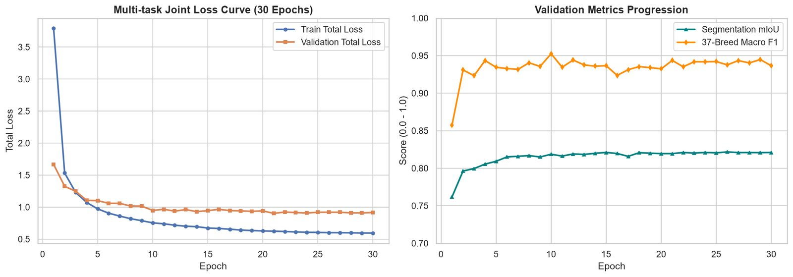
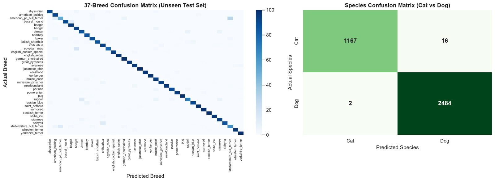
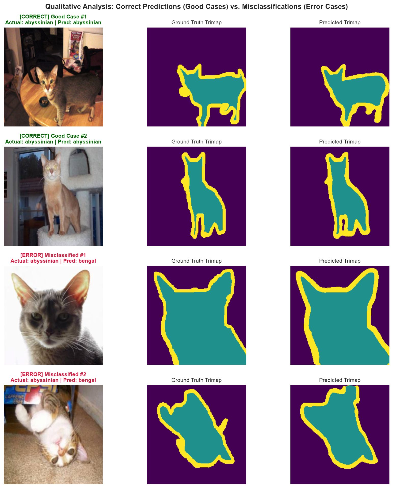

อ่าน Notebook นี้ให้เข้าใจ โดยไม่ต้องอ่านโค้ด
คู่มือนี้อธิบายไฟล์ project_overview_and_presentation_guide(V.2).ipynb ทีละส่วน ตามลำดับเดียวกับใน notebook ด้วยภาษาง่าย ๆ ทุกตัวเลขและทุกภาพมาจากผลที่รันจริง
ถ้าเอารูปหมาหรือแมวหนึ่งรูปให้โมเดลดู โมเดลจะตอบ 3 คำถามพร้อมกัน และนี่คือผลสอบกับรูปที่โมเดลไม่เคยเห็นมาก่อน 3,669 รูป:
สัตว์อยู่ตรงไหนในรูป
ระบายสีทุกจุดในรูปเป็นพื้นหลัง ตัวสัตว์ หรือขอบ
เป็นสายพันธุ์อะไร
เลือก 1 จาก 37 สายพันธุ์
เป็นหมาหรือแมว
เลือก 1 จาก 2 คำตอบ
Notebook คืออะไร และไฟล์นี้ทำหน้าที่อะไร
Jupyter Notebook คือเอกสารที่มีทั้งข้อความอธิบายและโค้ดที่กดรันได้อยู่ในไฟล์เดียว เมื่อรันโค้ด ผลลัพธ์อย่างตาราง กราฟ หรือรูป จะแสดงใต้โค้ดตรงนั้นทันที เหมือนรายงานที่คำนวณตัวเลขเองได้
ไฟล์นี้ไม่ได้ใช้สอนโมเดล การสอนทำไปแล้วด้วยไฟล์ train.py หน้าที่ของ notebook คือเปิดโมเดลที่สอนเสร็จขึ้นมาสอบ แล้วสรุปผลเป็นตารางและกราฟสำหรับทำสไลด์
train.py คือช่วงที่นักเรียนอ่านหนังสือ ส่วน notebook นี้คือ ใบรายงานผลสอบ ที่บอกว่าได้กี่คะแนน วิชาไหนเก่ง และพลาดข้อไหน| ส่วนใน notebook | ช่องโค้ด | ทำอะไร |
|---|---|---|
| ส่วนที่ 1 · ข้อมูล | เซลล์ที่ 1–2 | โหลดเครื่องมือ แบ่งข้อมูล และแสดงรูปตัวอย่าง |
| ส่วนที่ 2 · โมเดล | เซลล์ที่ 3 | อธิบายโครงสร้างโมเดลและนับขนาด |
| ส่วนที่ 3 · ผลสอบ | เซลล์ที่ 4–6 | กราฟการเรียนรู้ คะแนนสอบจริง และเทียบการทดลอง 3 แบบ |
| ส่วนที่ 4 · วิเคราะห์ | เซลล์ที่ 7–8 | ดูว่าโมเดลสับสนตรงไหน ตัวอย่างถูกและผิด และข้อจำกัด |
| ส่วนที่ 5 · สไลด์ | – | แผนทำสไลด์ 10 แผ่น (ข้อความล้วน) |
ป้าย "เซลล์ที่ …" ในหน้านี้ตรงกับบรรทัดแรกของช่องโค้ดแต่ละช่องใน notebook เช่น # เซลล์ที่ 5: โหลดโมเดลที่ดีที่สุด…
ข้อมูลที่ใช้ และทำไมต้องแบ่งเป็น 3 กอง
ข้อมูลมาจาก Oxford-IIIT Pet Dataset ของมหาวิทยาลัยอ็อกซ์ฟอร์ด มีรูปหมาและแมว 7,349 รูป ทั้งหมด 37 สายพันธุ์ (แมว 12 สายพันธุ์ หมา 25 สายพันธุ์) ทุกรูปมีเฉลยครบ 3 แบบ คือ ชื่อสายพันธุ์ หมาหรือแมว และรูประบายสีที่บอกว่าจุดไหนคือตัวสัตว์
รูประบายสีนี้เรียกว่า Trimap เพราะใช้ 3 สี:

แบ่งข้อมูลเหมือนการเตรียมสอบ
ทำไมต้องแยก: ถ้าเอาข้อสอบจริงมาให้โมเดลฝึก คะแนนจะสูงเกินจริงเพราะโมเดลจำข้อสอบได้ ปัญหานี้เรียกว่า Data Leakage หรือข้อสอบรั่ว
Stratified หมายถึงการแบ่ง Training กับ Validation ให้ทุกสายพันธุ์มีสัดส่วนเท่ากันในทั้งสองกอง เหมือนจัดข้อสอบซ้อมให้มีครบทุกบท ส่วนกอง Test ใช้การแบ่งทางการที่มากับชุดข้อมูล
Augmentation คือการดัดแปลงรูปเล็กน้อยตอนฝึก เช่น กลับซ้ายขวา หมุนไม่เกิน 10 องศา และปรับสี เพื่อให้โมเดลไม่ยึดติดกับมุมเดิม ทุกครั้งที่หมุนรูป เฉลยที่ระบายสีต้องหมุนตามด้วยมุมเดียวกันเสมอ ข้อสอบซ้อมและข้อสอบจริงไม่ถูกดัดแปลง
หน้าตาของโมเดล: ดวงตาชุดเดียว ตอบ 3 คำถาม
โมเดลมองรูปครั้งเดียวด้วยส่วนที่เป็น "ดวงตา" แล้วส่งสิ่งที่เห็นไปให้ส่วนอื่นตอบคนละคำถาม การที่หลายงานใช้ดวงตาชุดเดียวกันแบบนี้เรียกว่า Multi-task Learning ซึ่งเป็นประเภทงานที่ได้คะแนนความยากสูงสุด 4 คะแนนตามเกณฑ์
ResNet-50 Backbone
มองรูปแล้วสกัดสิ่งที่เห็นเป็น 5 ชั้น (C1–C5) ชั้นตื้นเห็นรายละเอียดเล็กอย่างเส้นขอบและสี ชั้นลึกเห็นภาพรวมอย่างรูปหน้า ส่วนนี้เคยเรียนจากรูปทั่วไปกว่าล้านรูป (ImageNet) มาก่อน จึงไม่ต้องเริ่มจากศูนย์
23.5 ล้านพารามิเตอร์ · 48%U-Net Decoder
ขยายสิ่งที่ดวงตาเห็นกลับเป็นรูปขนาดเต็ม แล้วระบายสีทุกจุด Skip connection ดึงรายละเอียดจากชั้นตื้นมาช่วย ขอบที่ระบายจึงคมกว่าใช้แค่ภาพรวม
24.0 ล้านพารามิเตอร์ · 49%Breed และ Species Head
รับภาพรวมจากชั้นลึกสุด (C5) แล้วแยกเป็นสองหัว หัวหนึ่งเลือกสายพันธุ์จาก 37 แบบ อีกหัวเลือกหมาหรือแมว
1.3 ล้านพารามิเตอร์ · 3%รวม 48.8 ล้านพารามิเตอร์ (พารามิเตอร์คือตัวเลขที่โมเดลปรับระหว่างเรียน คล้ายปุ่มปรับเสียงจำนวนมหาศาล) · ดวงตาซึ่งเป็นครึ่งหนึ่งของโมเดลถูกใช้ร่วมกันทั้ง 3 งาน ถ้าแยก 3 โมเดลต้องมีดวงตา 3 ชุด
โมเดลเรียนอย่างไร: คะแนนโทษ (Loss) และน้ำหนัก (λ)
ทุกครั้งที่โมเดลตอบผิดจะได้ คะแนนโทษ แล้วโมเดลปรับตัวเองให้คะแนนโทษลดลง คะแนนโทษรวมมาจาก 3 งานบวกกัน โดยแต่ละงานมี น้ำหนัก λ (แลมบ์ดา) คูณอยู่
| งาน | วิธีคิดคะแนนโทษ | น้ำหนักเริ่มต้น |
|---|---|---|
| ระบายสี | Cross-Entropy + Dice · Dice ช่วยให้ส่วนขอบสีเหลืองซึ่งมีพื้นที่น้อยไม่ถูกมองข้าม | λ = 1.0 |
| สายพันธุ์ | Cross-Entropy + Label Smoothing · ทำให้โมเดลไม่มั่นใจเกินไป เพราะหลายสายพันธุ์หน้าคล้ายกัน | λ = 1.0 |
| หมาหรือแมว | Cross-Entropy | λ = 0.5 |
- เรียนครบหนังสือ 30 รอบ (epoch) ดูรูปทีละ 32 รูป (batch size)
- ปรับตัวด้วยวิธี AdamW ก้าวเล็ก (learning rate 0.0001) เพื่อไม่ทำลายสิ่งที่ดวงตาเรียนมาแล้ว
- ค่อย ๆ ลดขนาดก้าวลงจนท้ายสุด (Cosine schedule) เหมือนเดินช้าลงเมื่อใกล้ถึงจุดหมาย
- ทุกรอบสอบข้อสอบซ้อม แล้วเก็บรอบที่คะแนน (ระบายสี + สายพันธุ์) ÷ 2 สูงสุด
กราฟการเรียนรู้: โมเดลเก่งขึ้นอย่างไรใน 30 รอบ

- กราฟซ้าย (คะแนนโทษ ยิ่งต่ำยิ่งดี): เส้นน้ำเงินคือตอนฝึก ลดจาก 3.79 เหลือ 0.60 เส้นส้มคือข้อสอบซ้อม ลดจาก 1.67 แล้วนิ่งที่ราว 0.91–0.95
- เส้นส้มไม่เด้งกลับขึ้น แปลว่าโมเดลไม่ได้ท่องจำแบบฝึกหัดจนทำข้อสอบใหม่ไม่ได้ อาการท่องจำนี้เรียกว่า Overfitting
- สองเส้นเทียบระดับกันตรง ๆ ไม่ได้ เพราะตอนฝึกรูปถูกดัดแปลงให้ยากกว่า ให้ดูแนวโน้มอย่างเดียว
- กราฟขวา (คะแนน ยิ่งสูงยิ่งดี): คะแนนระบายสีและสายพันธุ์ขึ้นเร็วใน 2–3 รอบแรก แล้วค่อย ๆ นิ่ง
- โมเดลที่เก็บไว้ใช้จริงมาจากรอบที่ 10 ซึ่งคะแนนรวมบนข้อสอบซ้อมสูงสุด
ผลสอบจริงบนรูปที่ไม่เคยเห็น 3,669 รูป
เซลล์นี้สำคัญที่สุด มันโหลดโมเดลหลักขึ้นมาทำข้อสอบจริงทั้งหมด แล้วแสดง 3 ตาราง ตารางแรกเป็นค่าที่ใช้ฝึกจริงซึ่งอ่านจากไฟล์โมเดลโดยตรง (เช่น batch size = 32) เป็นหลักฐานว่าตั้งค่าตามที่เขียนไว้ อีกสองตารางเป็นคะแนน
วัดการระบายสีด้วย IoU
นึกถึงสติกเกอร์ 2 แผ่น แผ่นหนึ่งคือที่โมเดลระบาย อีกแผ่นคือเฉลย เอามาวางซ้อนกัน IoU คือพื้นที่ที่ทับกัน หารด้วยพื้นที่ทั้งหมดที่สติกเกอร์ทั้งสองแผ่นคลุม ถ้าได้ 1.0 แปลว่าทับกันสนิท ลองเลื่อนดู:
Dice วัดคล้าย IoU แต่ให้คะแนนใจดีกว่าเล็กน้อย จึงสูงกว่า IoU เสมอเมื่อไม่ทับกันสนิท
Mean Dice = 0.899 · ส่วนขอบได้ต่ำสุดเพราะเป็นแถบบาง และคนทำเฉลยเองก็ไม่แน่ใจตรงนั้น ค่านี้จึงดึงค่าเฉลี่ยลง
วัดการทายสายพันธุ์ (37 คำตอบ)
| ตัวชี้วัด | ความหมายแบบง่าย | ค่าที่ได้ |
|---|---|---|
| Accuracy | ทายถูกกี่เปอร์เซ็นต์ของทั้งหมด | 91.69% |
| Precision | เวลาโมเดลบอกว่า "นี่คือบีเกิล" ถูกจริงกี่เปอร์เซ็นต์ · ความน่าเชื่อถือของคำตอบ | 91.88% |
| Recall | บีเกิลทั้งหมดในข้อสอบ โมเดลหาเจอกี่เปอร์เซ็นต์ · ความครบถ้วน | 91.65% |
| F1-Score | ค่ากลางที่รวม Precision กับ Recall เข้าด้วยกัน | 91.54% |
คำว่า Macro ในตารางของ notebook แปลว่าคิดคะแนนของแต่ละสายพันธุ์แยกกันแล้วเฉลี่ย ทุกสายพันธุ์จึงมีความสำคัญเท่ากัน ไม่ว่าจะมีรูปมากหรือน้อย
วัดการทายหมาหรือแมว
| Precision | Recall | F1 | จำนวนรูป | |
|---|---|---|---|---|
| แมว | 99.83% | 98.65% | 99.23% | 1,183 |
| หมา | 99.36% | 99.92% | 99.64% | 2,486 |
ข้อมูลมีหมามากกว่าแมวประมาณ 2 เท่า จึงต้องดูแยกกัน จะเห็นว่าแมวถูกเข้าใจผิดว่าเป็นหมาบ่อยกว่าเล็กน้อย คือแมว 16 ตัวถูกทายเป็นหมา แต่หมาถูกทายเป็นแมวแค่ 2 ตัว
ทดลอง 3 แบบ: ถ้าเน้นงานหนึ่ง อีกงานจะเป็นอย่างไร
ฝึกโมเดลตัวเดิม 3 ครั้ง ทุกอย่างเหมือนกันหมด ต่างกันแค่น้ำหนัก λ การเปลี่ยนตัวแปรเดียวแบบนี้ทำให้การเปรียบเทียบ เป็นธรรม ถ้าผลต่างกันก็มาจาก λ เท่านั้น เกณฑ์อาจารย์ก็กำหนดให้เปรียบเทียบอย่างน้อย 3 รูปแบบด้วย
| แบบ | λ ระบายสี : สายพันธุ์ | ระบายสี (mIoU) | สายพันธุ์ (F1) |
|---|---|---|---|
| Balanced · แบบหลัก | 1.0 : 1.0 | 0.8266 | 0.9154 |
| Seg-focused · เน้นระบายสี | 2.0 : 0.5 | 0.8285 +0.002 | 0.8942 −0.021 |
| Cls-focused · เน้นสายพันธุ์ | 0.5 : 2.0 | 0.8094 −0.017 | 0.9168 +0.001 |
- ตรวจว่าตัวเลขแถว Balanced ตรงกับคะแนนที่เพิ่งคำนวณในเซลล์ที่ 5 ถ้าตรงจะขึ้น ✅
- ตารางนี้ใช้รายงานผลอย่างเดียว ไม่ได้ใช้ตัดสินว่าแบบไหนชนะ เพราะการใช้ข้อสอบจริงเลือกโมเดลเท่ากับดูข้อสอบก่อนสอบ แบบ Balanced ถูกกำหนดเป็นแบบหลักมาตั้งแต่ต้น
Confusion Matrix: โมเดลสับสนสายพันธุ์ไหนกับไหน

- แถวคือคำตอบจริง คอลัมน์คือสิ่งที่โมเดลทาย ช่องยิ่งเข้มยิ่งมีรูปมาก
- ถ้าทายถูกหมด ทุกอย่างจะอยู่บนเส้นทแยงจากซ้ายบนลงขวาล่าง
- จุดสีที่หลุดออกนอกเส้นทแยงคือจุดที่โมเดลสับสน ตารางซ้ายมีเส้นทแยงเข้มชัด แปลว่าส่วนใหญ่ทายถูก
5 คู่ที่สับสนบ่อยที่สุด
| สายพันธุ์จริง | โมเดลทายเป็น | จำนวนรูป | ทำไมถึงสับสน |
|---|---|---|---|
| American Pit Bull Terrier | Staffordshire Bull Terrier | 29 | หน้าตาและรูปร่างแทบเหมือนกัน คนทั่วไปก็แยกยาก |
| Egyptian Mau | Bengal | 17 | แมวขนลายจุดทั้งคู่ |
| Staffordshire Bull Terrier | American Pit Bull Terrier | 13 | คู่เดียวกับแถวแรก แต่สับสนกลับด้าน |
| Sphynx (แมว) | Chihuahua (หมา) | 12 | ตัวเล็ก หูใหญ่ ผิวเกลี้ยงเหมือนกัน |
| Ragdoll | Birman | 12 | แมวขนยาวแต้มสีคล้ายกัน |
ตัวอย่างที่ทายถูกและทายผิด

- 2 แถวบน (สีเขียว): ทายสายพันธุ์ถูก และระบายตัวแมวได้ใกล้เคียงเฉลย
- 2 แถวล่าง (สีแดง): แมว Abyssinian ถูกทายเป็น Bengal แต่โมเดลยังระบายตัวแมวได้ถูกต้อง
- แปลว่าโมเดลรู้ว่าแมวอยู่ตรงไหน แต่แยกสายพันธุ์ที่หน้าคล้ายกันไม่ออก
ข้อจำกัด: สิ่งที่โมเดลยังทำไม่ได้ หรือยังสรุปไม่ได้
- ยังบอกไม่ได้ว่าโมเดลเดียวทำ 3 งานดีกว่าแยก 3 โมเดลหรือไม่
เพราะไม่ได้ฝึกโมเดลที่ทำงานเดียวมาเทียบ
- ต้องตอบ 1 ใน 37 สายพันธุ์เสมอ
รูปหมาอากิตะ ซึ่งไม่มีในข้อมูล ถูกทายเป็นชิบะด้วยความมั่นใจ 97.6% ความมั่นใจสูงจึงไม่ได้แปลว่าถูก
- รูปถูกย่อเหลือ 224×224 จุด
รายละเอียดขนและขอบเล็ก ๆ หายไป ส่วนขอบจึงระบายยาก
- ฝึกแต่ละแบบแค่ครั้งเดียว
ความต่างเล็ก ๆ เช่น 0.002 อาจเกิดจากความบังเอิญของการสุ่ม
- ข้อสอบซ้อมมีน้อย
ราว 20 รูปต่อสายพันธุ์ การเลือกรอบที่ดีที่สุดจึงอาจคลาดเคลื่อน
- ฝึกโมเดลแยกงานมาเทียบ เพื่อวัดประโยชน์ของ Multi-task โดยตรง
- ให้โมเดลหาน้ำหนัก λ ที่เหมาะเอง แทนการกำหนดด้วยมือ
- ใช้รูปละเอียดขึ้น เช่น 384×384 เพื่อให้ขอบคมขึ้น
- ให้หัวทายสายพันธุ์กับหัวทายหมาแมวตรวจคำตอบกัน
- เพิ่มความสามารถให้ตอบได้ว่า "ไม่รู้จักสายพันธุ์นี้"
คำศัพท์ที่เจอใน notebook
- Multi-task Learning
- โมเดลเดียวที่เรียนหลายงานพร้อมกัน โดยใช้ส่วนมองรูปร่วมกัน
- Segmentation
- การบอกว่าแต่ละจุดในรูปเป็นอะไร ในงานนี้คือระบายสี 3 สี
- Trimap
- เฉลยแบบระบายสี 3 ส่วน คือ พื้นหลัง ตัวสัตว์ และขอบ
- Backbone · Encoder
- ส่วน "ดวงตา" ที่มองรูปและสกัดสิ่งที่เห็นออกมา
- Decoder
- ส่วนที่ขยายสิ่งที่ดวงตาเห็นกลับเป็นรูปขนาดเต็มเพื่อระบายสี
- Pretrained ImageNet
- โมเดลที่เคยเรียนจากรูปทั่วไปมาก่อน จึงมองรูปเป็นตั้งแต่เริ่ม
- Epoch
- การเรียนครบชุดแบบฝึกหัด 1 รอบ งานนี้ใช้ 30 รอบ
- Batch size
- จำนวนรูปที่โมเดลดูพร้อมกันก่อนปรับตัวหนึ่งครั้ง งานนี้ใช้ 32
- Loss
- คะแนนโทษเมื่อตอบผิด โมเดลพยายามทำให้ค่านี้ต่ำที่สุด
- λ lambda
- น้ำหนักของแต่ละงานในคะแนนโทษรวม
- Overfitting
- อาการท่องจำแบบฝึกหัดจนทำข้อสอบใหม่ไม่ได้
- Data Leakage
- ข้อสอบรั่ว คือข้อมูลที่ใช้สอบหลุดไปอยู่ในข้อมูลที่ใช้ฝึก
- IoU · Dice
- คะแนนการระบายสี วัดว่าที่โมเดลระบายทับกับเฉลยมากแค่ไหน เต็ม 1.0
- Precision
- เวลาโมเดลตอบว่า X ถูกจริงกี่เปอร์เซ็นต์
- Recall
- ของที่เป็น X จริงทั้งหมด โมเดลหาเจอกี่เปอร์เซ็นต์
- F1-Score
- ค่ากลางที่รวม Precision กับ Recall
สรุปในย่อหน้าเดียว
Notebook นี้คือใบรายงานผลสอบของโมเดลที่ดูรูปครั้งเดียวแล้วบอกได้ 3 อย่าง คือ สัตว์อยู่ตรงไหน เป็นหมาหรือแมว และเป็นสายพันธุ์อะไร โมเดลระบายตัวสัตว์ได้ดี (IoU ตัวสัตว์ 0.90) แยกหมากับแมวแทบไม่พลาด (99.5%) และทายสายพันธุ์ถูก 91.7% ข้อผิดพลาดส่วนใหญ่มาจากสายพันธุ์ที่หน้าตาคล้ายกันจนคนก็ยังแยกยาก